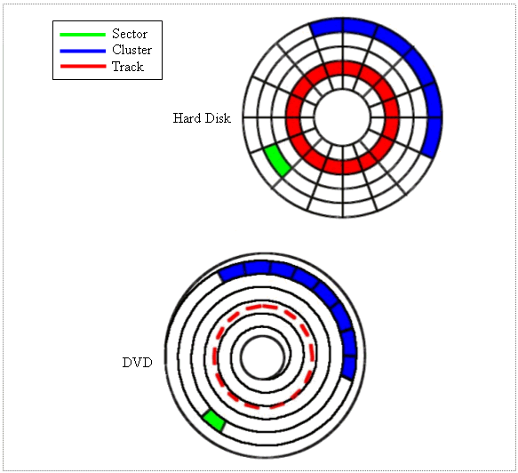
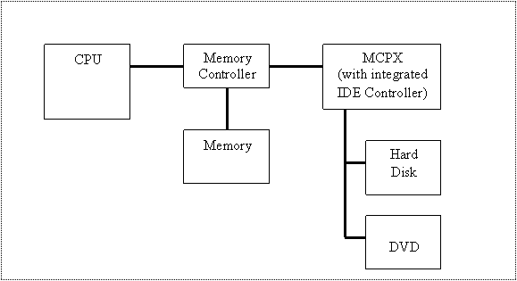
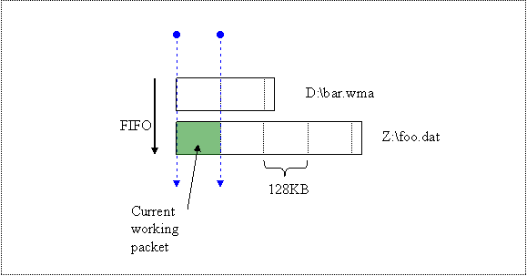
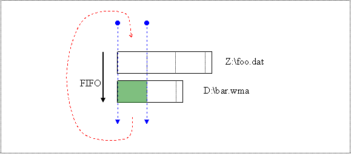
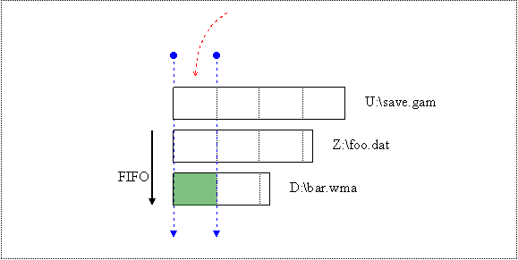
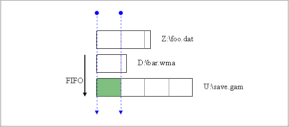
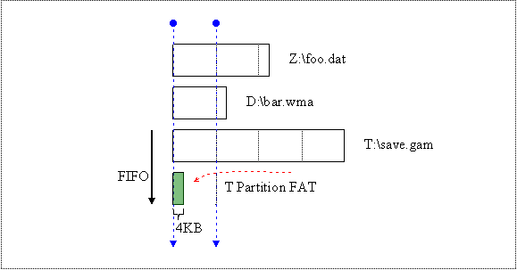
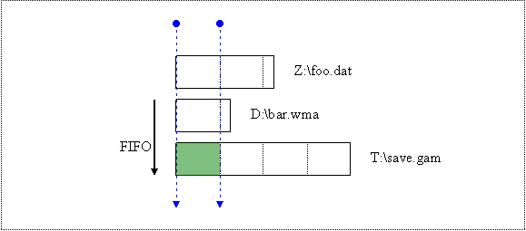
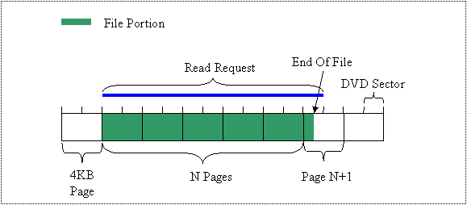

By Michael Dougherty, Software Design Engineer, Xbox Advanced Technology Group
This white paper describes efficient asynchronous non-buffered DMA (direct memory access) file I/O on the Xbox® video game system from Microsoft®. The asynchronous behavior assures that file I/O will not block the main thread, allowing for continuous game play. Using non-buffered DMA guarantees that the data is streamed directly to and from memory using the IDE controller, without wasting CPU cycles.
A basic understanding of the Xbox file systems and hardware will help us understand the dos and don'ts of Xbox file I/O.
Media discs are divided radially into tracks, and tracks are further divided into sectors. The file system groups multiple sectors into clusters to reduce the number of addressable regions.
All files begin on a cluster boundary and use an integer number of clusters.

Note that the DVD has one continuous "track" per layer that runs in a spiral fashion from the inner to the outer radius. However, in order to maintain consistency with hard disk terminology, the term "track" is used in reference to the location of data with respect to the radius of the DVD.
The cluster size of the Xbox DVD is 2 KB. The sector size of the Xbox DVD is also 2 KB (the DVD file system does not use a FAT table, so the number of addressable regions is not an issue). The Xbox hard disk has a sector size of 512 bytes. The Xbox hard disk partitions have a cluster size of 16 KB, with the exception of the utility partition. The utility partition can have a cluster size of 16 KB, 32 KB, or 64 KB. You can specify the cluster size of the utility partition by using the UDCLUSTER flag when building your image (see the XBE Image Builder Tool documentation in the XDK).
The Xbox Integrated Drive Electronics (IDE) controller is integrated into the MCPX (Media Communications Processor). The location of the MCPX in relation to the other Xbox components is shown below.

Older file I/O models, such as PIO (programmed I/O), use the CPU to handle the mundane chores of file I/O. Direct memory access (DMA) uses the IDE controller to handle the I/O operation for us. After an I/O request is submitted to the IDE controller, the CPU is free to continue until it receives an interrupt from the IDE controller upon I/O completion.
Read-ahead is designed to speed up media reads and is implemented in hardware on the media device as a cache. The basic idea is to read additional continuous data after a read with the hope that that data will soon be used. Reading continuous data (see FILE_FLAG_SEQUENTIAL_SCAN flag for CreateFile) avoids seek times and also best utilizes this cache. Write-behind is also implemented on the media device. Data to be written is temporarily stored so that the request can be resolved before the I/O has actually completed.
The Xbox uses 8.54-GB, dual-layer, single-sided DVDs. The different layers are accessed by re-focusing the read laser, which is a slow process. Only a subset of the 8.54 GB of data is addressable. Space is reserved for both security placeholders and for the video that is played when the game disc is placed in a standard DVD player. Also, the space near the edge of the disc is not used since it is less reliable. This leaves a total of 6.4 GB (3.2 GB per layer) available on the DVD for a title.
Unlike on the hard disk, DVD data has the same density regardless of its position along the disc radius. This means that more data can be packed into the outer tracks since the tracks get longer as they move out along the disc radius. The Xbox DVD is also a constant angular velocity (CAV) device. These facts lead us to an important performance characteristic of the Xbox DVD: because more data can be read from the out tracks in a single constant angular rotation, reads from the outer tracks will be faster than reads from the inner tracks.
A list of Xbox file I/O performance characteristics is provided below, along with definitions for specific terms used. These numbers represent the minimum performance expected from the Xbox. Due to cost reduction and availability, different Xbox consoles may have different media devices. As a result, the exact performance of individual boxes may vary. The values below represent the minimum performance levels:
Xbox hard disk:
| Average seek time: | 10 ms | |
| Full stroke seek time: | 30 ms | |
| Sustained data rate: | 12 MB/s |
Xbox DVD:
| Average seek time: | 130 ms | |
| Full stroke seek time: | 300 ms | |
| Maximum inner track sustained data rate: | 2.7 MB/s | |
| Maximum outer track sustained data rate: | 6.9 MB/s | |
| Laser refocus time: | 0.1 s |
As mentioned earlier, read-speed is dependent on the location of the data along the radius. Since the outer region of the disk is not used, the "available" outer track sustained data rate is slightly less than the maximum.
Available Outer Track Data Rate = 6.4 MB/s
Xbox File Allocation Table (FATX) is the custom Xbox hard disk file system. While FATX is similar to FAT32 in several respects, FATX is optimized specifically for the Xbox. The FATX table is stored on the hard disk, and contains mappings from logical to physical clusters. Note that a larger cluster size will result in fewer FAT entries for a given file, which is one of the advantages of increasing your cluster size using the UDCLUSTER image builder flag. FATX directory contents are stored as a list, so opening a file is an O(N) operation.
Xbox Game Disc Format (GDFX) is the Xbox custom DVD file system. Since all data stored on the DVD is continuous, the GDFX table does not contain any mappings from logical to physical clusters. GDFX directory contents are stored as a balance tree for a mastered disc, so opening a file is an O(logN) operation.
The file cache is used to store file data, file metadata, directory information, and hard disk physical-to-logical mappings. The Xbox system software file cache also acts as the storage area for buffered I/O operations (more below). The file cache is owned by the system software and resides in main memory. The file cache uses page size (4 KB) blocks that are assigned on a LRU basis. You can use XGetFileCacheSize and XSetFileCacheSize to get and set the file cache size. The default cache size is 64 KB.
All file I/O is done by sending I/O request packets (IRPs) down to the IDE controller. Each IRP contains the list of physical sectors and memory pages that data is to be transferred between. When the IDE controller receives the IRP, it uses DMA I/O to transfer data between the specified pages in memory and the specified sectors. In the case of non-buffered I/O, the memory pages are directly specified by the user. In the case of buffered I/O, some of the pages exist in the file cache and the system software handles the copy between the file cache pages and the user supplied memory.
The maximum amount of data that can be read or written by a single packet is 128 KB. This number is derived from the maximum number of hard disk sectors that can be programmed into the IDE controller. The file system queues both DVD and hard disk I/O requests into the same FIFO. I/O requests are moved to the end of the FIFO after a 128-KB portion completes. Any new requests are queued into the FIFO, which is how preemption occurs.
For example, let's say you have two outstanding I/O requests for the following: (1) 540 KB of Z:\foo.dat, and (2) 283 KB of D:\bar.wma. Both of these I/O requests will be in the FIFO.

After the IDE controller finishes the 128-KB request packet for foo.dat, it is re-queued and bar.wma receives its 128-KB request.

Now, let's say you submit another request of 1024 KB of U:\save.gam. The request is added to the FIFO.

After a couple more requests are completed, the FIFO will look like the following.

It appears as if we are ready to start working on 128 KB of save.gam. However, the logical-to-physical cluster mappings are not present in the file cache for U:\save.dat (surprise!). As a result, the file system must read a page from the FAT table.

After the FAT seek-and-read, the FIFO can continue.

After seven more I/O packet completions (assuming no more FAT misses), the FIFO will look like the following (you should be able to predict this state).
It is worth noting that unless you are careful, the preemptive nature of the FIFO can cause excessive seek times as it moves between 128-KB requests.
If you understand how the FIFO portion of the file system works, you can exercise precise control over file I/O in order to minimize seek times and maximize throughput. This can be achieved by doing reads and writes of specific sizes and by accessing files in a specific order. You can use these control mechanisms to tailor the FIFO to your file I/O requirements.
If possible, you should avoid creating deeply nested directories or excessive numbers of small files. Why?
Assume that you want to open .\aaa\bbb\ccc\data.dat from the DVD, and the file cache is empty. Since directories are treated just like files, the file system must do several seeks and reads before it can open the file. You can imagine the cost you will be paying for seeks if your directories are not adjacent to each other on the Xbox DVD.
At this point, the directory information should be cached. However, the cache may be wiped out by other file operations (which is highly likely if you are using buffered I/O).
The Xbox hard disk file system activity is similar to the Xbox DVD case, except that directory searches are O(N). Seek times are much faster on the hard disk, but remember that if the files and directories are not located in the file cache, logical-to-physical cluster mappings for both must be read from the FAT. Also, the cluster mapping may be fragmented. As a result, many small seeks may be required to read a file or directory. If you sprinkle several FAT hits and fragmentation seeks into the above scenario, the performance will drop significantly.
In both cases, using non-buffered I/O will help since the cached directory information and hard disk logical-to-physical cluster mappings are not wiped out by buffers allocated by the system software file cache.
The Xbox Storage Best Practices white paper is an excellent resource for general practices. Additional detailed information is listed below:
<s>fopen</s> CreateFile <s>fread</s> ReadFile <s>fwrite</s> WriteFile
When you use non-buffered DMA (FILE_FLAG_NO_BUFFERING), you must obey certain alignment requirements. Reads and writes must be sector-aligned and sector-sized. You must set the file pointer to sector-aligned boundaries. Your target source/memory must also be DWORD-aligned.
It is worth noting that a read past the end of the file is OK. The file system will return success, and the number of bytes read will be equal to the file size minus the last read file pointer position. You cannot use non-buffered I/O to write non-sector aligned data to the hard disk.
The following code asserts the alignments for non-buffered I/O:
//---------------------------------------------------------------------
// Name: Check_Alignment
// Desc: Checks the alignment of file offset, read/write size, and
// source/target memory for non buffered I/O.
//---------------------------------------------------------------------
#ifdef _DEBUG
VOID Check_Alignment( HANDLE hFile, VOID* pBuffer,
DWORD dwOffset, DWORD dwNumBytesIO )
{
// Assert parameters.
assert( pBuffer );
assert( hFile != INVALID_HANDLE_VALUE );
// Assert proper source/target memory alignment.
assert( (DWORD(pBuffer) & 0x00000003) == 0 );
// Figure out whether this file is on the DVD or hard disk.
BY_HANDLE_FILE_INFORMATION Info;
GetFileInformationByHandle( hFile, &Info );
DWORD dwDVDSerialNumber;
GetVolumeInformation( "D:\\", NULL,
0, &dwDVDSerialNumber,
NULL, NULL, NULL, 0 );
// Assert proper file offset and read/write size.
// The DVD and hard disk sector sizes will not change
// and are defined in Xbox.h.
if( Info.dwVolumeSerialNumber == dwDVDSerialNumber )
{
assert( dwOffset % XBOX_DVD_SECTOR_SIZE == 0 );
assert( dwNumBytesIO % XBOX_DVD_SECTOR_SIZE == 0 );
}
else
{
assert( dwOffset % XBOX_HD_SECTOR_SIZE == 0 );
assert( dwNumBytesIO % XBOX_HD_SECTOR_SIZE == 0 );
}
}
#endif
Note Note that FILE_FLAG_RANDOM_ACCESS is ignored if you use FILE_FLAG_NO_BUFFERING. Non-buffered I/O doesn't use the file cache and FILE_FLAG_RANDOM_ACCESS is used to help the system software optimize its file cache use for random access.
If the FILE_FLAG_NO_BUFFERING flag is not used, the file system will still use DMA file I/O. However, for some data, the file cache is used as the DMA I/O source or target. The CPU is used to transfer the data between the user-supplied buffer and the file cache.
For example, assume that you are using buffered I/O that has the alignment shown below to read a portion of a file on the Xbox DVD:
The following activity will take place in the file cache:
If you keep your reads and writes page aligned and of page size while using buffered I/O, the file cache is not used for file data. Also note that a special case is coded into the file system that allows you to do a DVD/hard disk sector-aligned read beyond the end of a file (or at the end of a file if it lies on a sector boundary) to avoid caching the last page. For example, in the case illustrated below, no file system caching in done:

Note that if you perform a read beyond the end of a file, ReadFile will return success. Furthermore, the number of bytes read will be the actual end of the file minus the read-start position.
The situation for writes is similar. However, any partial pages that are written that are not past the end of the file must first be read in before being modified and then written back out. In the above example, if partial page N+M is past the end of the file, it will not have to be first read in and modified before being written back out again. If page N+M is not past the end of the file, then it must be read in and modified before being written out again in order to preserve any data that was previously there.
The above scenarios are ideal cases for buffered I/O. When using buffered I/O, if you specify the FILE_FLAG_RANDOM_ACCESS flag, read/write on a non-DWORD aligned file offset, or supply a buffer that's not on a DWORD aligned address, the file system will implement step 2 differently. Instead, every 4-KB page is mapped through the cache, and the CPU must do a copy between the user buffer and the file cache. The alignment checks are necessary because step 2 needs to follow the rules for non-buffered I/O.
There are two ways to get asynchronous I/O. Both methods have advantages and disadvantages:
(1) Create a worker thread for asynchronous I/O.
The nice part about this solution is that it correctly handles the blocking nature of CreateFile, SetFilePointer, ReadFile, and WriteFile (remember that these functions may block in order to pull the FAT, directory information, or file system metadata into the file cache). Moving I/O into a worker thread prevents this from glitching the rendering thread. This worker thread automatically yields control to the main thread when waiting for I/O to complete. As a result, CPU use of the worker thread is extremely small.
It is best to create the thread once (CreateThread), and use events (CreateEvent, WaitForSingleObject) to block the thread when there is no I/O to perform.
//---------------------------------------------------------------------
//Name: IOProc
//Desc: Thread proc for IO
//---------------------------------------------------------------------
DWORD WINAPI IOProc( LPVOID lpParameter )
{
CThreadedLevelLoader* pLoader = (CThreadedLevelLoader*)lpParameter;
assert( pLoader );
for( ; ; )
{
// Wait for the I/O event to be signaled.
WaitForSingleObject( pLoader->m_hEvent, INFINITE );
// If the loader has closed the thread, we are finished.
if( pLoader->KillThread() )
ExitThread( 0 );
// Open the current level.
// If we can't open files, we are in trouble, so in the
// release build, we just keep trying.
while( FAILED( pLoader->OpenLevel() ) )
{
// Break in the debug build to find out what the
// problem is.
assert( FALSE );
}
// Keep trying to load and cache the level until we are
// successful.
while( FAILED( pLoader->StreamLevel() ) );
}
}
The disadvantage of using a thread is the memory overhead that is necessary. The thread size equals the size of the thread stack (12 KB minimum) plus the size of the thread object (13 KB minimum).
(2) Use overlapped I/O (FILE_FLAG_OVERLAPPED) to get asynchronous behavior without using a separate thread.
You don't have to pay the extra memory required for threaded I/O, but you must take the following precautions:
Using non-buffered I/O requires that your file layout be sector alignment friendly. Any data offsets that need to be accessed within the file should be on sector-aligned boundaries. Also, all files created using non-buffered I/O have a file size that is an integer number of the sectors size, so care must be taken to record the actual size of the relevant data in the file (versus using the file size).
The best performance can be realized by setting up file data in an Xbox friendly format, and then reading this data directly into a continuous memory region. The data is read into physically continuous memory, and the IDirectResource8::Register function is used to set pointers within the data headers.
It is recommended that you create register functions for your own data, which simply add the offset of the continuous region pointer to the offsets stored in the file. When using this method, be sure that the pages you allocate have the correct characteristics. Vertex buffers and textures usually go into write combining memory. Index buffers need to go into cached memory since the CPU is used to copy the indices into the push buffer. It is a good idea to lay these different regions out in the file, and then use non-buffered DMA to copy each region from the file into its corresponding continuous memory.
Typically, some file data must be manipulated in memory. If this data is going to be in write-combing memory, remember that reads from write-combining memory are slow because the CPU's cache is not used. You can read the data into cached memory, however. Before using the data, use XPhysicalProtect to reset the page types to write-combing.
As a final note, streaming audio and video is often where we find the most glitches in file I/O.
Simultaneous reads from both the utility partition and the DVD can help avoid the excessive seek times that can result from many small reads to different areas of the same media device.
If you need to concurrently read multiple audio or video streams from a single medial device, you can avoid large seek times by making sure the data is physically close together. This is achieved by using the layout tool on the DVD. Controlling file placement on the utility partition is a bit more difficult. The utility partition is formatted before your title receives it for the first time. As a result, pre-sizing the first file that you are going to write will reserve continuous clusters for the file up-front and prevent fragmentation. Subsequently, the next available continuous cluster will be assigned to the next file that you pre-size, placing the two files in close physical proximity on the hard disk. The physical location of several files on the utility partition can be controlled in this manner.
Additional source code can be found in the FastLoad sample that is included in the XDK. FastLoad asynchronously streams in approximately 50 MB from the DVD using non-buffered I/O. FastLoad then caches the data on the hard disk utility region. It also simultaneously streams in and plays a WMA file. The sample shows how to use the UDCLUSTER image builder flag, as well as both the XCalculateSignature and IDirect3DResource8::Register APIs. In addition, both types of asynchronous I/O (threaded and overlapped) are demonstrated.
Taking advantage of the Xbox file system requires significant preparation and planning, and should not be left for the last minute. Dealing with fast file I/O upfront allows you to design your data structures and file formats correctly from the beginning, versus retrofitting a broken system. Also, minimizing or eliminating load times helps decrease both development and testing wait time.
Nothing ruins a player's immersion in the game world as much as load screens. It's hard to suspend disbelief while watching a progress bar. With correct asynchronous non-buffered DMA, it is possible to have no perceptual load times. Huge worlds can be represented, with additional data being asynchronously loaded and saved as the player moves around the world. We expect that future Xbox games will realize this goal.